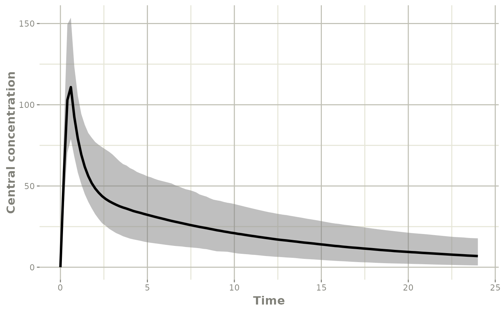
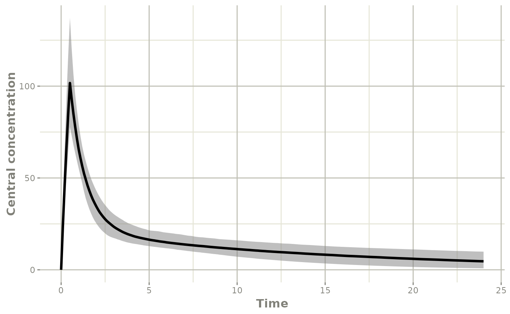
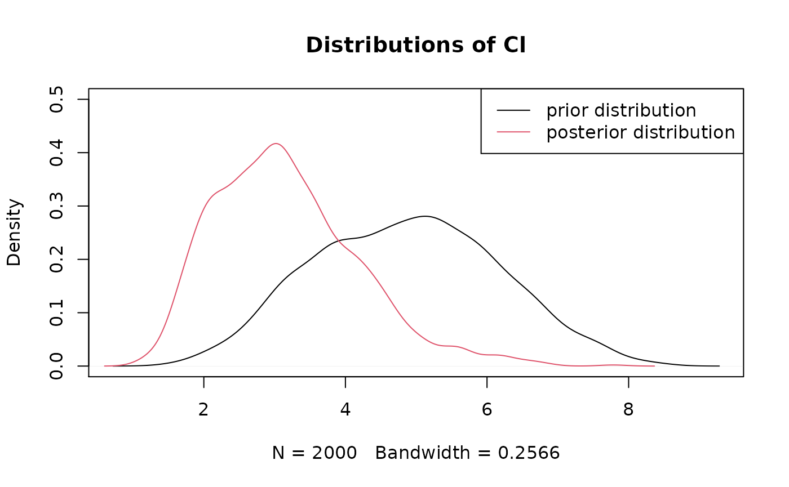
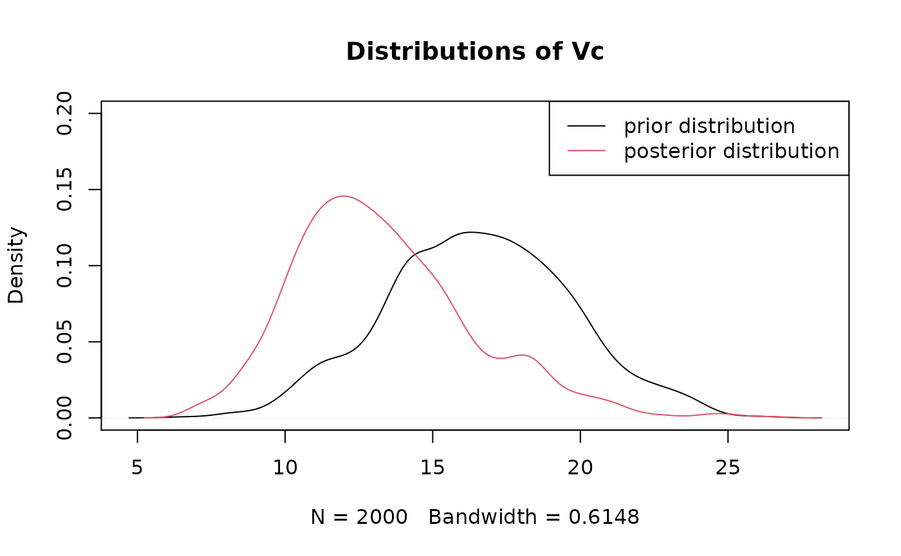
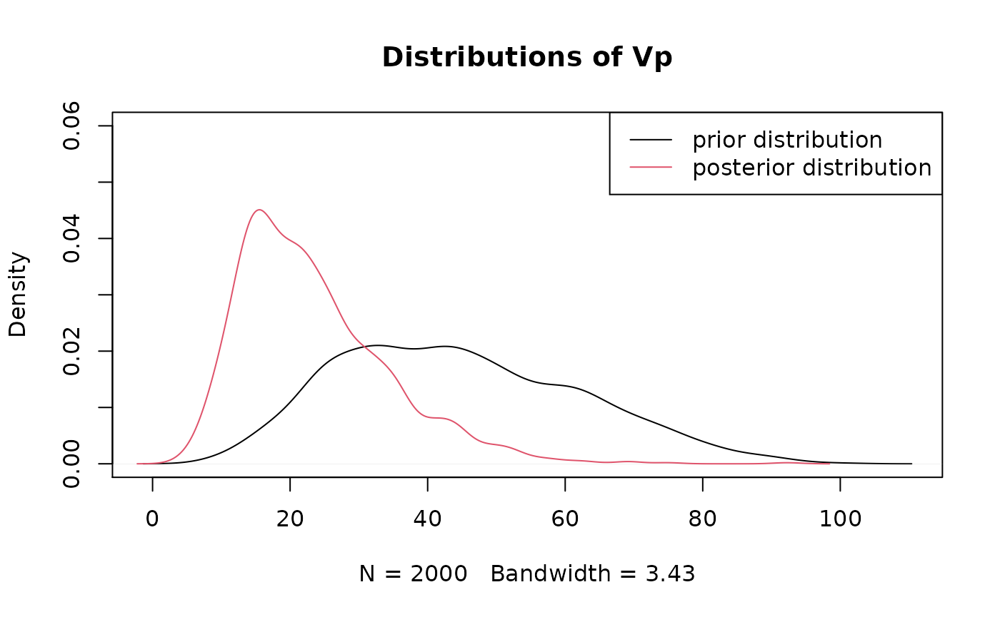
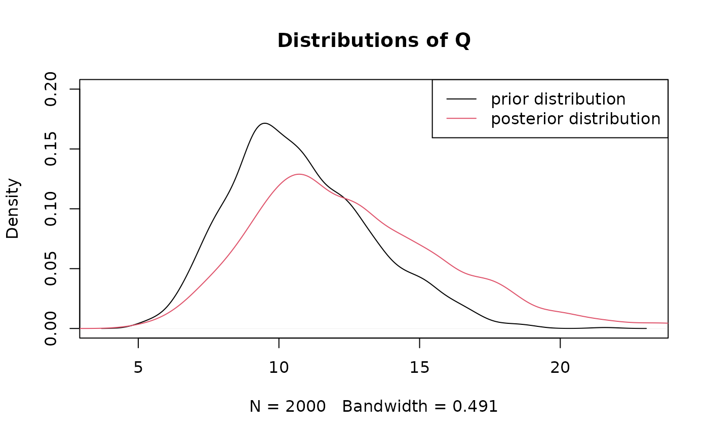

The case study of amikacin dose adjustment vignette("case_study_amikacin") focuses on point estimates: the typical values of population parameters, and MAP estimates. From the same data, the uncertainty associated with the estimation of the parameters can be assessed.
df_patientA_prior <- data.frame(ID=1,TIME=0,
DV=0,
EVID=0,
AMT=0,
CLCREAT4H=50,TBW=62,PoverF=169)
df_patientA_prior
#> ID TIME DV EVID AMT CLCREAT4H TBW PoverF
#> 1 1 0 0 0 0 50 62 169
patA_prior_amik <- posologyr(mod_amikacin_2cpt_Burdet2015,
df_patientA_prior)The inter-individual variability of the pharmacokinetic parameters can be explored by simulation, using the poso_simu_pop() function to generate sets of ETAs. The resulting distribution of ETAs is used to simulate and plot the pk profiles.
#event table: a single 30-minutes infusion
event_table_priordose <- RxODE::et(time=0,amt=2080,dur=0.5)
event_table_priordose$add.sampling(seq(0,24,by=0.1))
#Simulate sets of ETAs from the prior ppk model
priordist_param_patA <- poso_simu_pop(patA_prior_amik)$model$params
#Simulate with the event table and the simulated population parameters
priordist_dose_model_patA <- RxODE::rxSolve(object=patA_prior_amik$ppk_model,
params=priordist_param_patA,
event_table_priordose)
#Plot the results of the simulations
plot(confint(priordist_dose_model_patA,"Cc", level=0.95),ylab="Central concentration")
#> ! in order to put confidence bands around the intervals, you need at least 2500 simulations
#> summarizing data...done
df_patientA_tdm <- data.frame(ID=1,TIME=c(0,0.5,1,6),
DV=c(NA,NA,60,14),
EVID=c(10101,10101,0,0),
AMT=c(4160,-4160,0,0),
CLCREAT4H=50,TBW=62,PoverF=169)
df_patientA_tdm
#> ID TIME DV EVID AMT CLCREAT4H TBW PoverF
#> 1 1 0.0 NA 10101 4160 50 62 169
#> 2 1 0.5 NA 10101 -4160 50 62 169
#> 3 1 1.0 60 0 0 50 62 169
#> 4 1 6.0 14 0 0 50 62 169
patA_tdm_amik <- posologyr(mod_amikacin_2cpt_Burdet2015,
df_patientA_tdm)The precision of the the maximum a posteriori (MAP) estimates can be assessed by setting return_rse = TRUE when using the poso_estim_map() function; $fim is the Fisher Information Matrix.
patA_map <- poso_estim_map(patA_tdm_amik,
return_model = FALSE,
return_fim = TRUE,
return_rse = TRUE)
patA_map
#> $eta
#> ETA_Cl ETA_Vc ETA_Vp ETA_Q
#> 0.4798631 0.2789803 0.7218538 -0.1578003
#>
#> $fim
#> ETA_Cl ETA_Vc ETA_Vp ETA_Q
#> ETA_Cl 58.6178921 0.6701106 32.045668 5.000241
#> ETA_Vc 0.6701106 29.4317876 -2.067314 7.694310
#> ETA_Vp 32.0456676 -2.0673144 29.482055 -13.040164
#> ETA_Q 5.0002412 7.6943105 -13.040164 37.109965
#>
#> $rse
#> ETA_Cl ETA_Vc ETA_Vp ETA_Q
#> 0.6015548 0.6811285 0.6101811 1.6250431RSE below 30% are usually considered acceptable. More data points would allow for a better estimation.
Beyond point estimates, the a posteriori distribution of the individual parameters can be computed by Markov Chain Monte Carlo (MCMC) estimation. The poso_estim_mcmc() function can be slow, the number of iterations of the Metropolis-Hastings algorithm can be tuned.
patA_mcmc <- poso_estim_mcmc(patA_tdm_amik)The distribution of the individual profiles obtained can be plotted. The dispersion is significantly lower than that observed for the a priori population profile.
#Add sampling times to the RxODE model of MCMC estimations
mcmc_model_patA <- patA_mcmc$model
mcmc_model_patA$time <- seq(0,24,by=0.1)
#Plot the results of the estimations
plot(confint(mcmc_model_patA,"Cc", level=0.95),ylab="Central concentration")
#> ! in order to put confidence bands around the intervals, you need at least 2500 simulations
#> summarizing data...done
plot(patA_mcmc$eta[,1],type="l",ylab="ETA_Cl")
plot(patA_mcmc$eta[,2],type="l",ylab="ETA_Vc")
plot(patA_mcmc$eta[,3],type="l",ylab="ETA_Vp")
plot(patA_mcmc$eta[,4],type="l",ylab="ETA_Q")The a priori variance-covariance matrix is the omega matrix of the population pharmacokinetic (ppk) model. The variance covariance matrix of the conditional distribution of ETAs is computed from the output of poso_estim_mcmc().
patA_tdm_amik$omega
#> ETA_Cl ETA_Vc ETA_Vp ETA_Q
#> ETA_Cl 0.10 0.010 0.010 -0.060
#> ETA_Vc 0.01 0.050 0.020 0.004
#> ETA_Vp 0.01 0.020 0.200 0.003
#> ETA_Q -0.06 0.004 0.003 0.080
var(patA_mcmc$eta)
#> ETA_Cl ETA_Vc ETA_Vp ETA_Q
#> ETA_Cl 0.070583209 0.004997293 -0.084337434 -0.037803443
#> ETA_Vc 0.004997293 0.037167126 -0.003788056 -0.009872405
#> ETA_Vp -0.084337434 -0.003788056 0.169321302 0.060538471
#> ETA_Q -0.037803443 -0.009872405 0.060538471 0.053832456The density plots show the differences between the prior and the posterior distributions.
prior_estimates <- poso_simu_pop(patA_tdm_amik)
plot(density(patA_mcmc$model$Cl),ylim = c(0, 0.5),main="Distributions of Cl")
lines(density(prior_estimates$model$Cl),col=2)
legend("topright",
c("prior distribution", "posterior distribution"),
col = 1:2,
lty = 1)
plot(density(patA_mcmc$model$Vc),ylim = c(0, 0.2),main="Distributions of Vc")
lines(density(prior_estimates$model$Vc),col=2)
legend("topright",
c("prior distribution", "posterior distribution"),
col = 1:2,
lty = 1)
plot(density(patA_mcmc$model$Vp),ylim = c(0, 0.06),main="Distributions of Vp")
lines(density(prior_estimates$model$Vp),col=2)
legend("topright",
c("prior distribution", "posterior distribution"),
col = 1:2,
lty = 1)
plot(density(patA_mcmc$model$Q),ylim = c(0, 0.2),main="Distributions of Q")
lines(density(prior_estimates$model$Q),col=2)
legend("topright",
c("prior distribution", "posterior distribution"),
col = 1:2,
lty = 1)